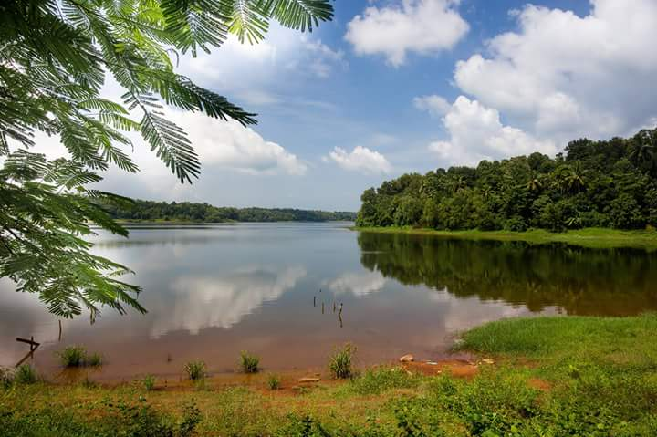

Beyond the Houseboat:
5 Ways to Experience Kerala's Hidden Backwater Gems
27 December 2025
Houseboats are cool and all, but let's bereal—they're everywhere. The actual magic happens in places tourists haven'tfigured out yet. Let me take you through eight underrated backwaterdestinations and show you how to experience each one like a true local.

"Life is a beautiful journey,
not a destination."
Jump a Local Ferry – No Script, Just Life
Forget the touristy boats. Hop on a local ferry and become part of the everyday chaos. Munroe Island's ferries packed with villagers heading to market, Poovar's lagoon crossings, Sasthamkotta's vast lake ferries—they all tell the same story. You're not a tourist here; you're just another person commuting through life. The ferry smells like fish, diesel, and morning chai. Kids splash, fishermen chat, women carry groceries. Twenty minutes in and you've seen more authentic Kerala than most people see in a week.
Canoe with a Local Boatman – Where Silence Speaks
This is where things get real. A narrow canoe, a weathered boatman, waterways only locals know. Munroe Island's hidden channels, Poovar's quiet lagoons, Kavvayi's dense mangroves, Valiyaparamba's island-dotted waters—each place reveals something different when you're moving slowly. The boatman knows every corner. Fishermen wave, women tend gardens, coconut trees hug the water. You'll stop at a tin shack toddy bar, grab fresh coconut water, laugh with locals who've lived here their whole lives. Later, lunch at the boatman's home—dal, curry, Kerala rice, homegrown salad. These moments? They don't happen on houseboats.
Kayak Your Own Path – Control Meets Freedom
Canoes are guided; kayaks are yours. Paddle through Sasthamkotta's mirror-like waters, drift through Bekal's historical channels, navigate Kumarakom's vast Vembanad Lake, or explore Kuttanad's agricultural waterways. Every bend surprises you. Every paddle stroke feels intentional.
The support boat shadows you—water, snacks, backup—but the rhythm is yours. Locals fish these same channels; you're not observing their world, you're moving through it.
Stay in a Waterfront Homestay – Sleep WhereLocals Live
Houseboats offer AC and room service. Homestays offer belonging. Find a simple waterfront homestay overlooking the backwater—Munroe Island's village homes, Poovar's beachside stays, Valiyaparamba's island cottages, or Kuttanad's farm homestays. Hammock swaying over water, sadhya aromas drifting through windows.
Evening conversations with hosts reveal how coir rope's made, why coconut palms sway that way, which toddy shops serve the best. Waking to home-cooked breakfasts feels like joining family, not checking into a hotel. You're part of the rhythm here.
Fish at Dawn – The Adventure That Bonds You
4 AM wake-up. Dugout canoe. Cast nets. This is where it gets primal. Whether it's Munroe Island, Sasthamkotta, Kavvayi, Kumarakom, or Kuttanad—dawn fishing is the same everywhere: raw, real, unforgettable.
As tilapia flips into the boat, laughter erupts. The sun rises golden. By morning, your catch sizzles for breakfast. This isn't tourism; it's connection. You're not watching fishing; you're doing it. The simplicity, the satisfaction, the salt-spray thrill—irresistible.
Munroe Island, Poovar, Sasthamkotta, Kavvayi, Valiyaparamba, Bekal, Kumarakom, Kuttanad—they're all underrated for a reason. Nobody's packaged them yet. Nobody's turned them into Instagram moments. They're still living, still breathing, still real.
Pick one. Experience it like a local. Beyond the houseboat lies immersion—not floating above the backwaters, but *in* them, moving like locals, breathing like locals, living like locals.
The backwaters reveal their true magic onlywhen you stop observing and start participating.